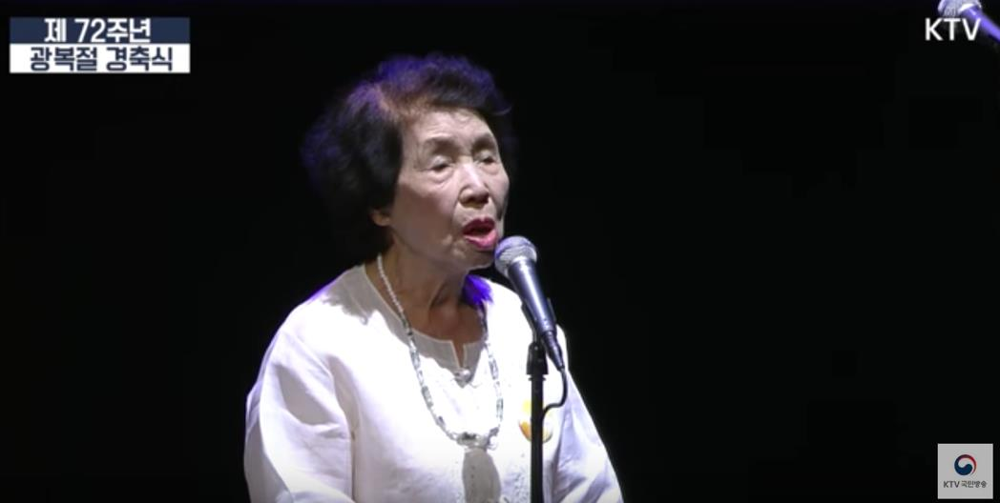

누군가의 아내, 누군가의 딸이 아닌
총과 칼, 그 너머에
오랜 시간 누군가의 아내, 누군가의 딸로 기억되었던 여성독립운동가들은 변화된 역사관 속에서 차츰 독립된 주체로 평가받기 시작했다. 문화학술지 <이제 여기 그 너머> 에 실린 “암살- 여성 광복군, 안옥윤” 이라는 칼럼의 박혜은 편집기자는 안옥윤이라는 캐릭터처럼 총과 칼을 든 여성인 경우 목적과 의견을 가진 능동적인 인격체로 평가받기 쉬웠다고 설명한다.
보훈처가 창설된 해인 1962년에 서훈을 받은 여성 5인 중 남자현은 조선총독 암살미수로, 안경신은 평양경찰서에 투탄 시도로 일제에 대항했다. 그 밖에도 항일 무장 투쟁의 쌍두마차로 여겨지는 의열단과 한인애국단에는 기생 출신 현계옥과 공산당원 출신 이화림이 유일한 여성단원으로 있었다. 최초 여성 의병장 윤희순과 김원봉의 아내로 잘 알려진 박차정의 불꽃 같은 삶 또한 널리 칭송 받았다.
그러나, 가족을 따라 중국으로 망명하여 독립군 뒷바라지에 매진한 여성 선열들의 경우 어떻게 평가받고 있을까? 그에 대한 대표적인 예시로 석주 이상룡 선생의 손주 며느리 허은 지사와 우당 이회영 선생의 부인 이은숙 지사가 있다. 둘은 만주독립운동 현장에서 독립운동가들을 위해 밥을 짓고 자금을 모으는 등 여러 방면에서 헌신했으나, 한동안 외면 받아오다 지난 8월에야 비로소 서훈을 받았다. 남편 오광선 장군을 따라 만주로 망명한 후 독립군을 뒷바라지 하고 마을의 촌장 역할을 하며 마적단의 위협 속에서도 독립군 가족의 안위를 지킨 정현숙 지사도 1995년에 서훈을 받았으나 역사의 주인공으로 여겨지는 경우는 없었다.
항일공연예술활동 등에 주력했던 독립운동가들 경우도 마찬가지다. 한국광복진선청년공작대는 1938년부터 각종 문예형식을 활용해 항일선전활동에 앞장 섰던 조직이다. 지복영, 오광심, 오희영, 오희옥, 방순희, 김병인, 김효숙, 신순호, 연미당, 조계림, 이국영 등의 여성 독립운동가들이 이 조직에 소속되어 있었고, 청년공작대원 34명 중 3분의 1 가량이 여성대원이었다. 이후 한국광복군이 출범하자 공작대는 광복군으로 편입되었고, 각종 선전사업을 이어나갔다. 당시 어린 나이에도 불구하고 조직에 몸담았던 오희옥 지사는 생존해 있는 여성독립운동가 3명 중 한명이다. 더욱 더 자세한 이야기를 듣기 위해 그녀를 만났다.
소중한 가치를 지키는 일
 ▲ 제72주년 광복절 경축식에서 애국가를 부르는 오희옥 지사
2017년 8월 15일, 광복군 출신 오희옥 지사가 제72주년 광복절 경축식에 등장해 애국가를 불렀다. 왜소한 체구에서 나오는 또렷한 목소리는 세종문화회관 대강당을 가득 메웠다. 오희옥 지사의 애국가 선창은 ‘광복’의 숭고한 의미를 잊고 살아가는 현대인들에게 깊은 울림을 선사했다.
“8월 12일에 청와대 탁현민 행정관이 ‘모친께서 애국가를 불러줄 수 있겠냐’고 제게 연락을 했어요. 어머니는 딱 한 번 리허설 하고 무대에 오르셨는데도 덤덤하게 잘 해내셨어요. 아들로서 정말 뿌듯했죠.” 오 지사의 아들 김흥태 (55) 씨가 그 날을 회상하며 말했다.
▲ <중국 장사창사에서 열렸던 제19주년 삼일절 기념공연 기념사진. 중국에서 활동했던 독립운동가들에게 삼일절은 가장 중요하게 기억해야할 날이었다.>
오희옥 지사의 기억 속에 여전히 또렷하게 남아있는 그 때 그 시절, 함께했던 이들의 이름과 얼굴.
(윗줄: 노태준, 진준호, 한도명, 조경한, 민영준, 이달, 신순호, 민영숙, 연미당, 방순희, 진중화, 오광심, 김효숙, 이지일, 엄도해, 고시복, 송면수,
아랫줄: 김동수, 안춘생, 엄기동, 엄기선, 김자동, 엄기순, 민영의, 오희옥, 민영애, 김철, 유해준)
오희옥 지사(92) 는 독립운동가 집안에서 태어나 열네 살이 되던 해인 1939년부터 해방 전 까지 한국광복진선청년공작대 아동부와 광복군 제5지대에서 활동했다. 일본군에 대한 비밀 정보수집, 초모(招募)와 연극.무용 등을 통한 항일의식 고취와 한국인 사병에 대한 위무 활동에 종사하면서 국외 항일투쟁에 힘을 보탰다.
항일을 소재로 한 문화선전활동은 중일전쟁이 장기화 되는 상황에서 최소한의 인원을 통해 최대의 선전 효과를 가져올 수 있었고, 장병들을 위한 모금 공연을 통해 자금 확보도 할 수 있었기 때문에 학계에선 진보된 독립운동으로 평가받는다.
김흥태 씨는 어머니가 광복군으로 활약했던 과거에 대해 한번도 자랑하듯이 드러낸 적이 없었다고 전했다. “어머니께서는 늘 본인이 마땅히 해야할 일을 했을 뿐이라고 말씀하셨고, 서훈을 받을 때에도 ‘아버지가 대표로 받았으면 됐지’ 라며 식구들끼리만 모여 소소하게 기념했다”고 회상했다. 오희옥 지사의 아버지는 만주 일대에서 광복군을 이끈 오광선 장군이고, 어머니 정현숙과 언니 오희영 모두가 독립유공자 서훈을 받았다.
▲ 병상에서 글씨를 쓰는 오희옥 지사의 모습
아흔의 나이라고는 믿기지 않을 정도로 정정했던 오희옥 지사는 지난 3월 17일, 급성뇌경색으로 쓰러졌다. 기력이 쇠해져 말을 하지 못하고 왼쪽 팔다리를 자유롭게 움직이지 못하는 상태이다. 영양 섭취도 코에 꽂은 미음식으로 대체하고 있다. 다행히 병세가 호전되어 방문 당일인 12월 2일에는 교회도 다녀오고 취재에 동행했던 이윤옥 작가의 이름을 종이에 적을 수 있었다.
오희옥 지사는 그동안 바쁜 생활 중에도 독립운동을 알리고 기념하는 일이라면 일상을 미뤄서라도 적극적으로 참여했다.
김흥태 씨는 “각계각층에서 어머니를 자주 찾았어요. 언론, 정치인 뿐만 아니라 대학생, 심지어는 초등학생까지 찾아왔어요. 그럴 때 마다 어머니는 그들의 요청을 마다하지 않고 ‘내가 대단하진 않지만 들려줄 수 있는 건 들려주겠다’는 마음으로 그들을 만나셨어요.”라고 설명했다.
김 씨는 “어머니가 얼른 건강을 되찾아서 그동안 못다 전한 이야기를 들려주시고 소중한 가치를 지키는 여정에 오래도록 머물러 계셨으면 좋겠다”고 덧붙였다.
글: 최해련